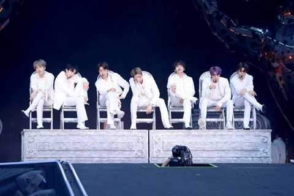
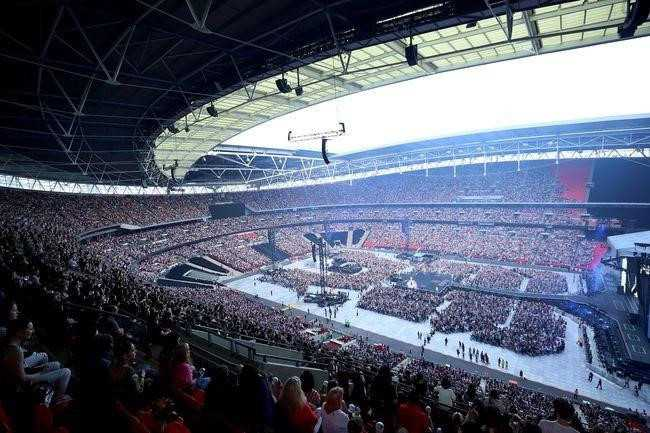

Mới đây, CNN đã đưa tin về buổi diễn lịch sử của nhóm nhạc BTS tại sân Wembley, London với lời khen ngợi đặc biệt.
Vào 3h30 ngày 2/6 (giờ Hàn Quốc, tức 19h30 ngày 1/6 theo giờ Anh), BTS đã tổ chức đêm concert đầu tiên trong khuôn khổ chuỗi chương trình vòng quanh thế giới World Tour Love Yourself: Speak Yourself tại sân vận động Wembley, London, Anh.
Ngay sau buổi biểu diễn, đông đảo truyền thông và người hâm mộ quốc tế đều dành sự quan tâm đặc biệt đến các chàng trai đến từ xứ sở kim chi. Thậm chí, kênh truyền thông nổi tiếng nước Mỹ - CNN, còn đưa buổi hòa nhạc của BTS vào mục Bản tin quốc tế nổi bật.
BTS là nhóm nhạc nước ngoài đầu tiên biểu diễn tại sân Wembley, London.
CNN cho biết: "Sau khi ban nhạc Anh mang tên The Beatles lần đầu tiên ra mắt khán giả tại nhà hát Ed Sullivan vào tháng 2/1964, cơn sốt 'Beatle Mania' đã xâm chiếm khắp nước Mỹ. 55 năm sau, vào tháng 5/2019, một nhóm nhạc nước ngoài khác cũng chinh phục được đông đảo người hâm mộ khi trình diễn tại địa điểm này".
CNN đã liên tưởng BTS với The Beatles ở nhiều mặt, từ trang phục đến kiểu tóc. Ngoài ra, CNN còn đề cập đến việc BTS đã đạt thành tích dẫn đầu BXH Billboard 200 trong vòng chưa đầy một năm với 3 album. Điều này đã tạo nên bộ ba nhóm nhạc huyền thoại, có sức ảnh hưởng lớn tới nền âm nhạc toàn cầu: The Beatles - The Monkees - BTS.
Đặc biệt, CNN còn nhấn mạnh, thành tích của BTS đạt được thậm chí còn lớn hơn thành công trong quá khứ của The Beatles. Bởi lẽ, các bài hát của BTS đa phần đều viết bằng tiếng Hàn, chỉ duy nhất một thành viên trong nhóm thành thạo tiếng Anh. Điều này khiến những thành tựu của nhóm BTS đạt được trên thị trường quốc tế, càng trở nên đáng tự hào.

Khán giả tham dự đêm diễn của BTS, lấp đầy sân Wembley.
Wembley là sân khấu mơ ước của các nghệ sĩ nổi tiếng trên khắp thế giới. Đây từng là nơi tổ chức đêm nhạc của nhiều tên tuổi đình đám quốc tế như: Queen, The Beatles, Michael Jackson... Với việc tổ chức thành công đêm nhạc đầu tiên trong chuyến lưu diễn vòng quanh thế giới, BTS chính thức ghi tên vào lịch sử âm nhạc Kpop, khi trở thành nghệ sĩ Hàn Quốc đầu tiên có đêm diễn riêng tại "thánh địa" này.
Trước đó, đêm diễn của BTS tại Wembley đã ghi nhận bán hết toàn bộ 60.000 vé chỉ sau 90 phút. Theo truyền thông xứ Hàn chia sẻ, biển lightstick của nhóm đã lấp đầy sân vận động Wembley rộng lớn. Mặc dù phần lớn khán giả là người nước ngoài, song họ không ngừng hát theo các ca khúc của nhóm bằng tiếng Hàn.
Sau đêm diễn tại Wembley, BTS sẽ tiếp tục đổ bộ vào sân vận động Stade de France tại Paris, Pháp, vào ngày 8/6 tới. Tour diễn thế giới của BTS dự kiến sẽ kết thúc tại Nhật Bản.
BTS trở thành nhóm nhạc nam đầu tiên xuất hiện trên show The Late Show with Stephen Colbert sau hơn nửa thế kỷ kể từ lần The Beatles tham gia chương trình.